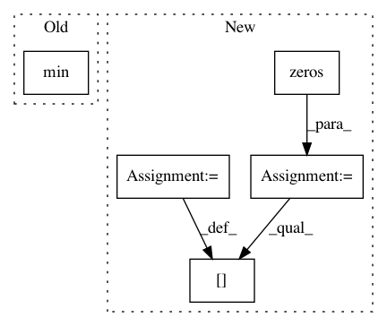

90b78b1379b3423aa3b4b5d0de7313f88bda23ab,chainercv/utils/mask/mask_to_bbox.py,,mask_to_bbox,#Any#,5
Before Change
for msk in mask:
where = np.argwhere(msk)
if len(where) > 0:
y_min, x_min = where.min(0)
y_max, x_max = where.max(0) + 1
else:
y_min, x_min, y_max, x_max = 0, 0, 0, 0
bbox.append((y_min, x_min, y_max, x_max))
After Change
xp = cuda.get_array_module(mask)
instance_index, ys, xs = xp.nonzero(mask)
bbox = xp.zeros((R, 4), dtype=np.float32)
for i in range(R):
ys_i = ys[instance_index == i]
xs_i = xs[instance_index == i]
if len(ys_i) == 0:
continue
y_min = ys_i.min()
x_min = xs_i.min()
y_max = ys_i.max() + 1
x_max = xs_i.max() + 1
bbox[i] = xp.array([y_min, x_min, y_max, x_max], dtype=np.float32)
return bbox
In pattern: SUPERPATTERN
Frequency: 3
Non-data size: 5
Instances
Project Name: chainer/chainercv
Commit Name: 90b78b1379b3423aa3b4b5d0de7313f88bda23ab
Time: 2019-02-17
Author: yuyuniitani@gmail.com
File Name: chainercv/utils/mask/mask_to_bbox.py
Class Name:
Method Name: mask_to_bbox
Project Name: nipy/dipy
Commit Name: 623daf36fdcc4fe3e3cc63f863532e10668faa86
Time: 2017-04-04
Author: arokem@gmail.com
File Name: dipy/denoise/tests/test_non_local_means.py
Class Name:
Method Name: test_nlmeans_random_noise
Project Name: cornellius-gp/gpytorch
Commit Name: 57763571ee5d8c4414dc57fec6f151bfe8d13995
Time: 2018-04-03
Author: srikanth.gadicherla@aalto.fi
File Name: gpytorch/kernels/spectral_mixture_kernel.py
Class Name: SpectralMixtureKernel
Method Name: initialize